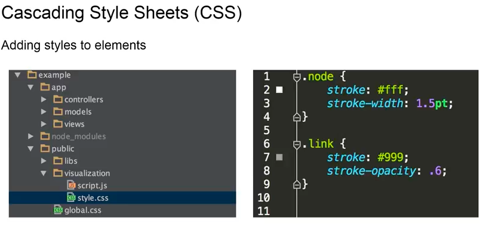
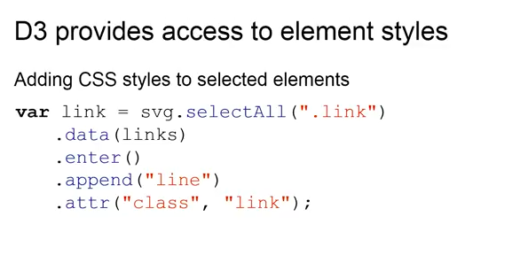
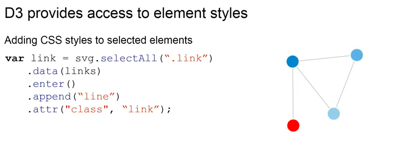
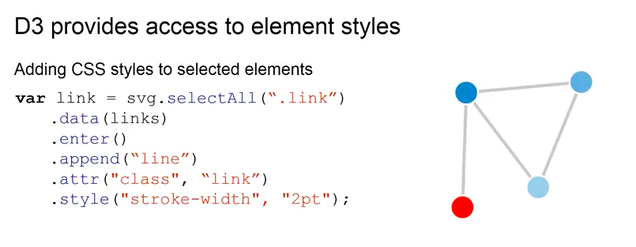
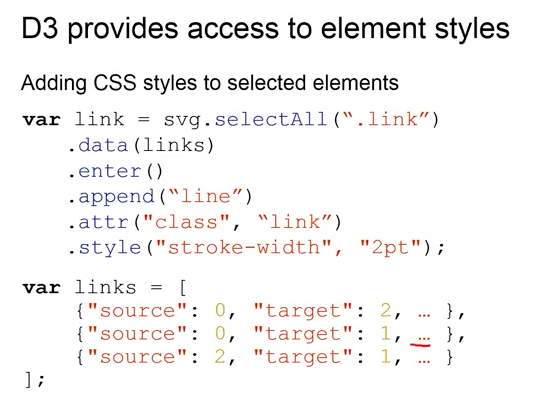
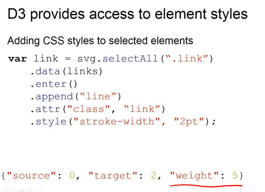
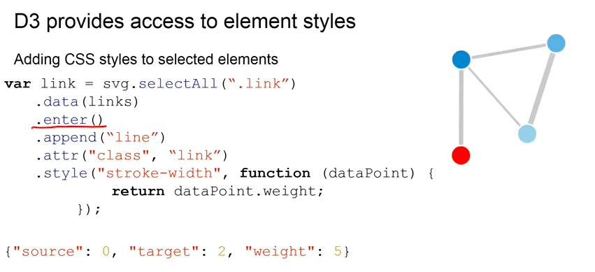

In this part of our data visualization lecture, we've been talking about controlling element styles using D3. So, now we're going to take a closer look into css, into what it is and how we can combine it with D3.
CSS stands for cascading style sheets. And while HTML is responsible for structuring the data on a website, CSS is actually responsible for how it looks. And if you take a look into the code provided to you during the Node.js example in the visualization folder, you will find a style CSS file. You can see the content of that on the right.
So, in the previous example, we used CSS classes as a label to denote a line element as a link. You can see it here.
So, while we attached this attribute class and set it to link to our line element in the SVG, besides labeling it as a link, we also attached all the styles to find in the CSS class linked to it. In this case, as you can see down here, we set a stroke of the color gray because this hashtag 999 is a hex code for the curve for the gray color. And we also set a stroke opacity, meaning this stroke, or the color of the line, should be slightly transparent. And on top, you can also see with a similar CSS class for nodes. In this case, we also set a stroke with a white color with the width of 1.5 points.
So, if we go back to our code, you can see on the right that the class link has been attached to the links between the nodes and the color of these links is actually gray and it's slightly opaque.
Also, as you can see it here on the nodes, the links don't actually touch the nodes directly. This is due to the fact that the node has a 1.5 width stroke of the white color. So, if we would have a black background, you would actually see a white line around the nodes, which we have set in the CSS file up here.
So, now lets imagine, we would like to change around the width of our links.
We could go back into CSS and actually change the stroke width in the CSS file. But, it would be much nicer to be able to have access to these sort of styles directly in our code. And luckily, D3 provides a number of ways to do it. One way is the style function, in which we can set CSS styles directly in the code. It takes two parameters: it takes the style to be influenced as the first parameter and then the value to set it to as a second. So, in this case, we're setting the stroke width to two points and as you can see in comparison to the slide before, the width of the connections between the nodes has doubled.
Usually, you would have to create a new CSS class for each width you'd like to have, which sounds like a lot of effort and requires a lot of redundancy. So, instead lets take another look into our data.
 We have two links data that you've seen before. What you haven't seen before is that there are some ellipses here and if we expand that in a single data point, you can see that behind those ellipses we actually have hidden the weight attribute of a connection. In terms of a graph, many graphs are weighted, meaning the links between the nodes have a certain weight associated with them. In our Game of Thrones example, the weight refers to the intensity of interactions between two characters, for example. And it would be great if you could now set the connections between two nodes to do width depending on the weight of this connection, meaning the more intensive the interaction between two characters is, the thicker the line between those two nodes, representing those characters should be. So, instead of directly setting the width of all the links to two, we would like to access the data directly, extract the weight value and set it to this one.
Luckily, in D3, this link variable up here contains every link element that is in our SVG graphic.
That means that as soon as we call the enter function here, anything that comes below this will actually be applied to every single link element in our data. This means, we can also access whatever data is stored in this link element. In this case, the weight down here. We can now set the stroke width depending on the weight stored in the data point by passing an anonymous function. D3 will pass the current data point to this function as a parameter and all we now need to do is we need to extract the weight attribute from the parameter and set the stroke width to this parameter. As you can see, on the right, we now have a different stroke width for all the links depending on how intensive the interaction between the nodes or characters actually is.
One more thing you would usually like to do in a case like this, is you would like to normalize the data to a certain degree, because the weight can differ drastically, but we would like to keep the thickness of the line within reasonable limits. So, you would apply, for example, the square root to each of the data points. So, you would say: always take the square root of the weight. Or you could also use the logarithm for that. So, it is then more naturally-looking width for the connections.
So, now that we have seen how we can use CSS and D3 to actually influence the style and appearance of our visualizations and graphics, in the next part we'll talk about how we can make them interactive using event handling.